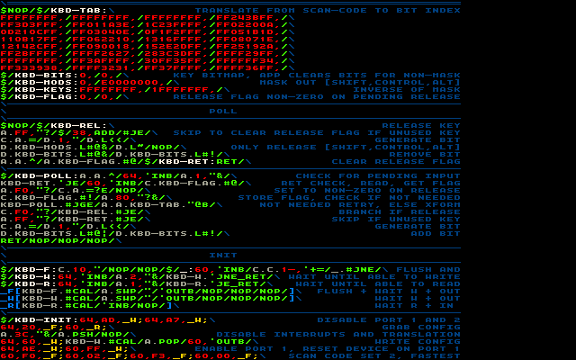

20150810 - 1536-5 : Keys
Evening 5 on 1536. Wrote a mini PS/2 keyboard driver (source below) based on prior work. Ran out of time for testing, got distracted by SIGGRAPH slides.
Only supporting 64 keys (bit array in register), good enough to run arcade controllers which alias as keyboards.
Only supporting driver key release on {shift, control, alt}, allowing application to clear bits for release for other keys.
Had an interesting bug today: forgot to implement the "MOV REG,REG" opcode, surprised got this far in 1536 without register to register move.
Manually keeping 16-byte groupings for instructions has some interesting side effects on coding style...
